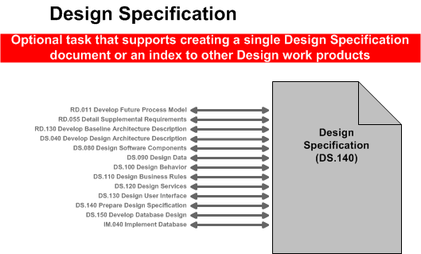

OUM |
Task Overview |
||
Method Navigation |
Current Page Navigation |
||
|
|
||||||||
The purpose of this task is to assemble all the information that is required to describe the design of a software component into a complete Design Specification, ready for review. Prior to being passed on to a developer, the Design Specification is reviewed for defects and, as necessary, the defects are corrected.
It is very important to note that executing this task is not a substitute for the individual Design tasks, specifically:
However, this specification task and its work product can serve as a structure for completing the design for each component by providing pointers back into these Design tasks. The Design Specifications that specify the designs for the set of components required to support the implementation of a use case package, along with the Analysis Specification for that use case package comprise the detailed design for a use case package.
C.ACT.DC Design - Construction
Design Specification
The Design Specification pulls together all design elements for a component into a single document so that they can be easily assessed against each other, against the design guidelines, and against the requirements.
You should follow these steps:
No. |
Task Step | Component | Component Description |
|---|---|---|---|
1 |
Prepare the technical overview by reviewing the technical components necessary to implement the use case package. | Technical Overview | The Technical Overview is a textual overview for the component. |
2 |
List all of the building blocks that are required to design the designated component. | Building Block List | This component is a list of classes, modules, objects, etc. |
3 |
Draw a block relationship diagram to graphically depict how the component under consideration interfaces to related components, external systems, and other actors. If available, reference the class diagram prepared as part of the Software Component Design (DS.080). | Block Relationship Diagram | This component is a graphical depiction of how the component under consideration interfaces to related components, external systems and other actors. |
4 |
Document the design of the screens for the component. You may reference or include the User interface Design (DS.130) where individual screen designs were prepared. |
Screen Design(s) | The Screen Design(s) is a list of screen designs by use case. |
5 |
Identify the sequence of screen navigation for each use case. You may reference or include the Navigation Diagram from the User Interface Design (DS.130) that represents the screen navigation for each Use Case Scenario. |
Navigation Logic | This component is a list of screen navigation scenarios by use case. |
6 |
Design the report layouts for each use case within the component. You may reference or include the User Interface Design (DS.130) for the storyboard that represents the screen navigation for each Use Case Scenario. |
Report Design(s) | This component is a list of the report designs that apply to this component by use case. |
7 |
Define the design details of each attribute - format, length, accessibility, visibility, validation rules, mandatory or optional, etc. - that is required for each entity or class within the component for each use case. If available, include the class diagram from the Component Data Design (DS.090), | Data Design Data Design Table Data Sources Validation Logic |
This component contains a class diagram for the component or tables that define the Data Design Table, Data Sources and Validation Logic. |
8a |
Define the tables, the attributes and the SQL statements that are necessary to create, read, update, and/or delete the attributes for each use case from the database. Include the Software Component Design (DS.080). The focus is on creating the SQL documents for the CRUD processes. If no use cases are available, provide the SQL for your module here. | SQL Design | This component contains the SQL statements. |
8b |
Prepare the Performance Considerations by defining the design considerations necessary to achieve the data retrieval and storage requirements for performance. Include performance supplemental requirements as specified in the Supplemental Requirements (RD.055) work product for service level requirements (i.e., 1 minute response time, etc.). | Performance Considerations | The Performance Considerations define the design considerations necessary to achieve the data retrieval and storage requirements for performance. |
9a |
Define the details of each operation (to include pseudo code) required for each entity, module or class within the component. Refer to the Design Class Diagram within the Component Behavior Design (DS.100), if available, with a focus specifically on the Operations section for the class. If not available, complete the table provided in this section of the work product. | Behavior Design | Function (Operation) Design |
9b |
Define the implementation strategy for each business rule within this component. Refer to the Business Rules Design (DS.110) to capture the business rules for this component. | Business Rule Design | This component contains the details for the business rule design. |
10 |
Design the services between the components and the interfaces with external systems for each Use Case. Refer to Software Components Design (DS.080) and focus on calling arguments (that is, service signature) and logic definition. Document the services that are provided by this component, for each use case. Refer to the Component Behavior Design (DS.100), if available. Document the External interface messages (i.e., name, arguments etc.) that are sent or received by this component for all external systems for each Use Case. Define the design considerations necessary to achieve the performance requirements for each interface. Include performance supplemental requirements as specified in the Supplemental Requirements (RD.055) work product for service level requirements. Include the Software Component Design (DS.080) with a focus on the interface performance design. |
Interface Design | Service Design External Interface Design Performance Considerations |
11 |
The intent of this section is to document the design considerations for the component regarding the non-functional requirements. Refer to the Supplemental Requirements (RD.055). You may refer to the Software Component Design (DS.080), if available. Otherwise, use the sections in this work product to record the design considerations, add additional sections for various Supplemental Requirement types. | Quality of Service Design Considerations | Restart Strategy Crash Recovery Security Performance |
12 |
The intent of this section is to design the physical schema of the database, or changes to the database for this component. Refer to the Component Data Design (DS.090) and Logical Database Design (DS.150). | Database Design | Database Diagram, Desired Table Changes, Table Indexes, Sequences, Archiving |
13 |
Add to or modify this list as appropriate. Provide additional details where necessary to facilitate the creation of the installation routines. | Installation Considerations | This component contains a list of performance considerations. |
14 |
Review for consistency. Review the design for the specific use case package according to quality guidelines. | Design Specification | None |
15 |
Maintain Issues List | Issues List | The Issues List is used to track the resolution of design issues. |
The Design Specification can be created for every module or component to be developed. This artifact collects all of the Design work products into a single document and equates roughly to the “technical design document” that was used in some older methodologies.
The following illustrates the various tasks where work products might be incorporated into the Design Specification.

The intent of this document is to refine the analysis view and create one of the components required to implement the use case package analyzed during Analyze Behavior (AN.060). In this task, you add the design level details. Refer to the specific Behavior Analysis (AN.060) to determine the scope and level of design for the Design Specification.
Typically, each design specification is focused on a single component, though it might be appropriate for a single design specification to encompass all of the components required to implement a use case package. Choose a component and describe the major features of its design. You should specifically link the Design Specification to the Analysis Specification (AN.100) to which it applies. In this way the combination of the Analysis Specification (stated in Business Terms) and the Design Specification(s) (stated in System terms) provide the materials that the implementer will need to implement the components.
The intent of this section is to list the building blocks that are required to design the designated component. This includes classes, objects, modules, etc. Reference the Module View of the Architecture Description (RD.130/DS.040) and appropriate Software Component Design (DS.080) to derive the list of classes and their relationships.
The purpose of this section is to draw a block relationship diagram to graphically depict how the component under consideration interfaces to related components, external systems and other actors. If available, reference the Conceptual View and Module View of the Architecture Description (RD.130/AN.040/DS/040) and the class diagram included in the Component Behavior Design (DS.100) and Software Component Design (DS.080).
In this section, you document the design for the screens for the component. If available, reference or include the User Interface Design (DS.130) for individual screen designs. Otherwise, attach a screen prototype or insert a diagram that shows the screen design.
In this section, you identify the sequence of screen navigation for the component. Reference or include the applicable User Interface Design (DS.130) for this component. You should provide the navigation flow between screens for the different scenarios in the use cases supported by this component design. There are a variety of techniques available to show this navigation control, you may simply reference a navigation prototype, or document specific flow between wire frame diagrams, for the use case to which they apply.
Design the report layouts for each use case within the component. For Applications implementations, you will want to provide a report layout for any custom reports prioritized in the Reporting Fit Analysis ( MC.090) or other tasks in which you have identified reporting requirements.
The intent of this section is to define the design details of each attribute (format, length, accessibility, visibility, validation rules, mandatory or optional, etc.) that is required for each entity or class within the component. If available, reference or include the class diagram (or other data design model) from the Component Data Design (DS.090) for this component.
If the class diagram is not available, you may complete the Data Design Table, Data Sources, and Validation logic tables that are provided in the template. Guidance for completing these tables is included below:
Data Design Table – Use this table to identify and define the design details of each attribute for each entity or class required by the component. You should include format, length, accessibility, visibility, validation rules, mandatory or optional, and any other attributes that you feel are required to provide a detailed data design.
Data Sources Table – Use this table to identify and define the table, columns, and source values that are needed for the individual data elements listed in the Data Design Table. Refer to the Physical Database Design (IM.040) to identify the existing tables where the above attributes are located.
Validation Logic Table – Use this table to identify and define the rules that are necessary to verify the format, length, relationships, etc., of the attributes listed in the Data Design Table.
SQL Statements and performance considerations required to support this component are included in this section of the work product.
Define the tables, the attributes and the SQL statements that are necessary to create, read, update, and/or delete the attributes for each use case from the database. Include the Software Component Design (DS.080). The focus is on creating the SQL documents for the CRUD processes. If no use cases are available, provide the SQL for your component here.
Prepare the Performance Considerations by defining the design considerations necessary to achieve the data retrieval and storage requirements for performance. Include performance supplemental requirements as specified in the Supplemental Requirements (RD.055) work product for service level requirements (i.e., we need to respond within 1 minute, etc.)
In this section, you describe the operation (and its operation signature) of each of the design classes required for this component. Define the details of each operation (to include pseudo code) required for each entity, module or class within the component. Refer to Component Behavior design (DS.100) and the Design Class diagram, with a focus specifically on the operations section for the class.
Function (Operation) Design – In the event that you do not have a class diagram use the table provided in this section.
Business Rule Design – The intent of this section is to define the implementation strategy for each business rule that is being implemented by this component. Refer to the Business Rules Design (DS.110) to capture the business rules for this component.
Design the services provided by the component and the interfaces with external systems. Refer to Software Component Design (DS.080) and focus on calling arguments (i.e., service signature) and logic definition.
If your component is at the level of a “service” in a using Service-Oriented Architecture, document the services that are provided by this component. Refer to the Service Design (DS.120) .
Document the external interface messages (i.e., name, arguments, etc.) that are sent or received by this component for all external systems for each use case.
Define the design considerations necessary to achieve the performance requirements for each interface. Include performance supplemental requirements as specified in the Supplemental Requirements (RD.055) for service-level requirements. Include the Software Component Design (DS.080) with a focus on the interface performance design. Design the services provided by the component and the interfaces with external systems. Refer to Software Component Design (DS.080) and focus on calling arguments (i.e., service signature) and logic definition.
If your component is at the level of a “service” in a using service-oriented architecture, document the services that are provided by this component. Refer to the Service Design (DS.120).
Document the external interface messages (i.e., name, arguments, etc.) that are sent or received by this component for all external systems for each use case.
Define the design considerations necessary to achieve the performance requirements for each interface. Include performance supplemental requirements as specified in the Supplemental Requirements (RD.055) for service-level requirements. Include the Software Component Design (DS.080) with a focus on the interface performance design.
The intent of this section is to document the design considerations for the component regarding the non-functional requirements. Refer to the Supplemental Requirements (RD.055). If no Software Component Design (DS.080) exists then use the sections in this work product to record the design considerations. Add additional sections for various supplemental requirement types.
The intent of this section is to design the physical schema of the database, or changes to the database for this component. These component-level database design elements should ultimately be incorporated into a single Logical Database Design (DS.150).
Add to or modify this list, as appropriate. Provide additional details where necessary to facilitate the creation of the installation routines for the component.
Once you have all the design elements for a use case package in one place you can check to see that all the elements fit together. For instance, are the component’s data needs satisfied by the data, SQL, and database design? Are the data types of the classes’ attributes in line with the data design? Do elements in the user interfaces align with component behavior and the data in the database? Additionally, use the quality criteria at the end of this document to continue your review for consistency.
Since this document is for a specific use case package, do not forget to review this document in the context of the other Design Specification documents for other use case packages.
As this document is being put together and even more so during the consistency review, design issues will crop up. These should be captured, noted, and tracked in the Open and Closed Issues section of the document.
This task has supplemental guidance that should be considered if you are doing a Siebel CRM implementation. Use the following to access the task-specific supplemental guidance. To access all Siebel CRM supplemental information, use the OUM Siebel CRM Supplemental Guide.
This task has supplemental guidance that should be considered if you are doing a Webcenter implementation. Use the following to access the task-specific supplemental guidance. To access all WebCenter supplemental information, use the OUM WebCenter Supplemental Guide.
This task involves the following method roles:
Role |
Responsibility |
% |
|---|---|---|
System Architect |
Ensure that the design specification is consistent with the overall design guidelines and fully captures all design elements relevant to the chosen use case package. Document open and closed design issues. | 70 |
Designer |
Review the Design Specification for consistency. You may want to include a designer who specializes in user interface designing as well. | 20 |
Database Designer |
Review the Design Specification for consistency. | 10 |
* Participation level not estimated.
You need the following for this task:
Prerequisite |
Usage |
|---|---|
Supplemental Requirements (RD.055) |
The Supplemental Requirements are used as an input to determine any non-functional requirements for a use case. |
Use Case Specifications (RA.024) |
Use the Use Case Specification is used as a starting point for organizing the design of the component. |
Architecture Description |
The Conceptual View, Module View and Execution View of the Architecture Description are the starting points and must be taken into account to ensure that the design fits within the given framework. |
Design and Build Standards (DS.050) |
|
Software Component Design (DS.080) |
The Software Component Design for this component contributes directly to the Design Specification. |
Component Data Design (DS.090) |
The Component Data Design for this component contributes directly to the Design Specification. |
Component Behavior Design (DS.100) |
The Component Behavior Design for this component contributes directly to the Design Specification. |
User Interface Design (DS.130) |
The User Interface Design for this component contributes directly to the Design Specification. |
The following templates and tools are available to assist with this task:
Template File Name |
Comments |
|---|---|
| MS Word |
The Design Specification is used in the following ways:
Distribute the Design Specification as follows:
Use the following criteria to check the quality of this work product:

Copyright © 2006, 2016, Oracle and/or its affiliates. All rights reserved.